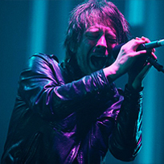
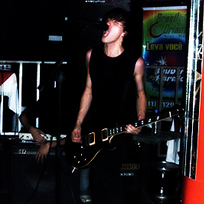
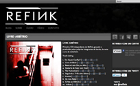
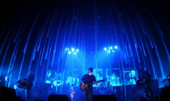
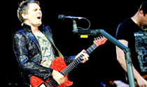
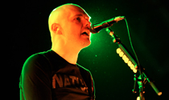

-
Web
Desenvolvimento web, projetos realizados, web designer, layouts, HTML5, CSS3, Responsive Web Design
-
 Vídeo
Edição de vídeo profissional, projetos colaborativos para realização de DVD's de shows.
-
 Música
Nas horas vagas guitarrista, produtor e compositor. Bandas que participo, projetos etc.
Web
HTML5, CSS3, Responsive Web Design, Wordpress, User Experience, Mobile Design e mais
-
Fortap.com - Making Tap Easy
Site da Fortap. Empresa com foco em aplicativos e publicações para tablets e celulares e publicidade em HTML5... Visitar site
-
 Refink.com.br - Site da banda Refink
Site oficial da banda de rock alternativo Refink. O site possuí músicas para download, release, notícias, fotos etc... Visitar site
-

Blog Projeto Muse DVD BR
Site do projeto colaborativo Muse DVD BR. Construído com Wordpress, traz todas atualizações e vídeos do DVD. Visitar site
Vídeo
DVD Shows, projetos colaborativos, Crowdsourcing
-
 Projeto Radiohead - Rain Down
O Rain Down é um projeto colaborativo entre fãs do Radiohead para a realização de um DVD do show realizado pela banda no Brasil que aconteceu no mês de março de 2009. Assistir
-
 Muse DVD BR 2011 - #musedvdbr
O projeto tem o objetivo de reunir as filmagens dos fãs do Muse/U2 através de celulares e câmeras pequenas para montar um DVD gratuito e disponível a todos. Assistir
-
 Thru the Eyes of Brazil
O projeto reuniu vídeos e produziu um DVD multi-câmera do show do Smashing Pumpkins no Brasil em novembro de 2010, no festival Planeta Terra em São Paulo. Assistir